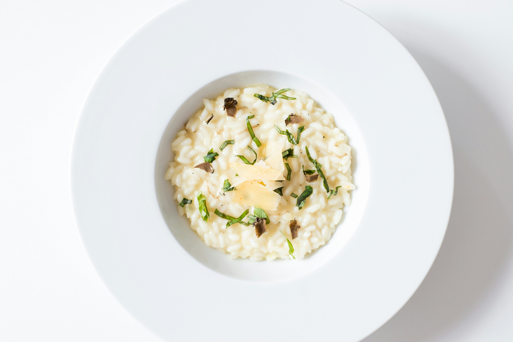

Risotto

Description
A quick and easy vegetable risotto. Feeds around 4, depending on how hungry everyone is!
Ingredients
- 1 tbsp rapeseed oil
- 1 onion, diced
- 1 zucchini, diced
- 2 carrots, peeled and diced
- 1 cup frozen peas
- 2 cups risotto rice
- 4 cups hot water
- 50g butter
- 20g parmesan (plus extra to top)
Recipe
- Heat the oil in a large saucepan and fry the onions until translucent
- Add the carrots, zucchini and frozen peas, and fry until slightly softened
- Add the risotto rice and fry for a few minutes
- Throw in some salt and pepper and stir through
- Pour in the hot water, stri through and bring to a boil
- Turn the heat down and simmer until the rice is cooked through, add more water if necessary
- Throw in the parmesan and butter, salt to taste and serve!
Home